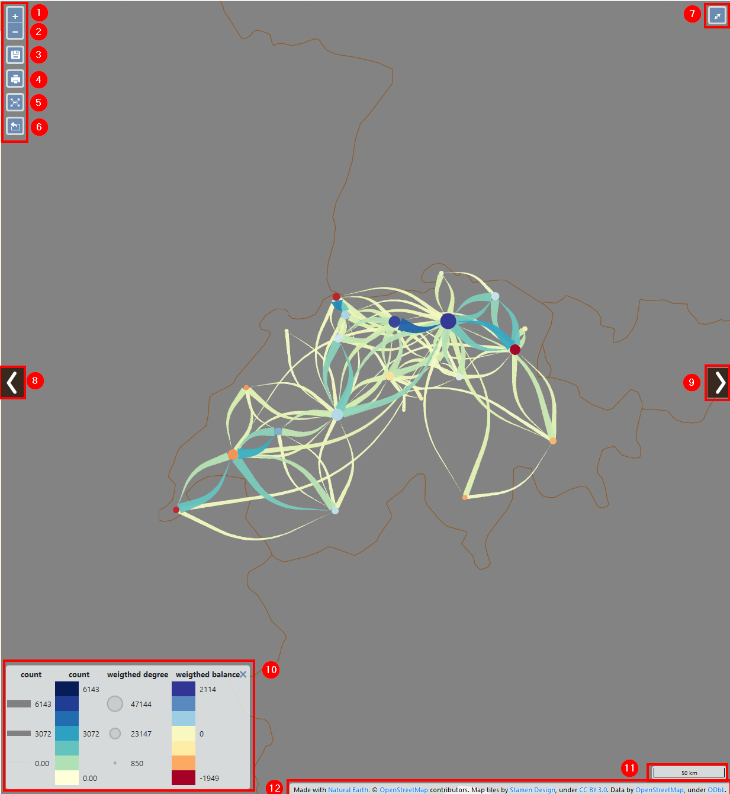
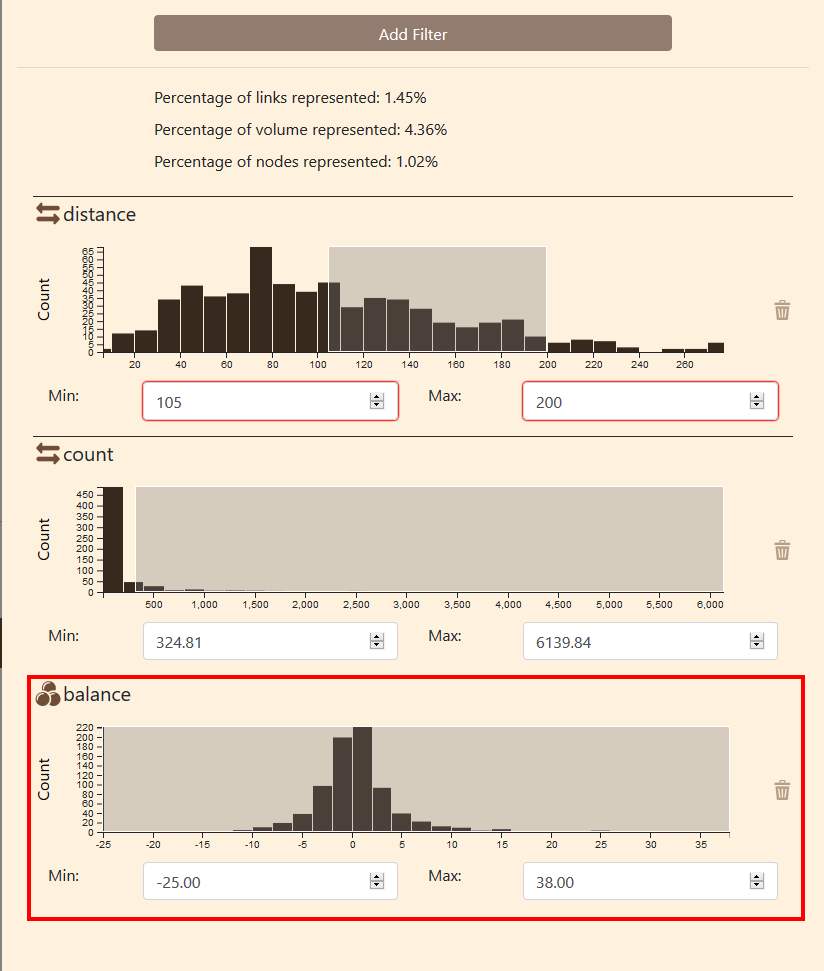

2 Functionnalities
2.1 Launching an example
In order to test the differents functionnalities provided by Arabesque, we will use the Swiss communting demo.
Please find it in the Demo section and click on the Explore button (1).
Launching Swiss communting example
You might be greeted by a warning message. This is normal, if Arabesque find nodes without links or links without nodes, it will remove them. It is based on a join on nodes IDs.
Cleaning the dataset
- Click on
Ok.
2.2 Panels general presentation
Arabesque is divided by default in 3 panels:
- Geographical layer management panel
- Map panel
- Statistical data filtering panel
The map panel The central part of the application is dedicated to geovisualization itself. After a few simple settings, it is possible to obtain a meaningful map quite easily, as shown below.
Arabesques panels
The side panels (geographic layer and data) can be hidden by clicking on the arrows on the side.
2.3 Geographical layer management panel
The left panel deals with geographical entities: from the addition of internal or external geonumeric layers, whatever their scale, local (OpenStreetMap, for example) or global (naturalearthdata, for example), their possible reprojection, to their graphic symbolization, particularly developed for the design of links. In addition to the fact that several types of linear shapes are already available, it is possible to play on all the geometrical dimensions of the figures (width, length, surface, curvature).
This layer panel contains several buttons and tools to handle the layers.
Arabesques panels
- Home button to get back to Welcome page
- Projection : click to deploy the projection tool
- Title : dialog box to change map title
- Add layers: toolbox to add geographical layers
- Layers : area where you can manipulate the layer
Let’s see those how they work.
2.3.1 Projection tool
By default, entry data and project are into WGS84 (EPSG:4326), which is a Geographic Coordinnate system. If it is great for dataset on a global scale, for more local ones, it might be interesting to use projected coordinate system. Arabesque provides a series of preset projection but you can also provide an EPSG code and the application will look for its definition on the website epsg.io.

Projection toolbox
- Click on the Projection button to deploy the toolbox
- You can choose a projection from the list of provided ones
- Or you can enter an EPSG code to get the definition from the web.
2.3.1.1 Use a predefined projection
Projection toolbox
- Click on the button to deploy the drop-down list
- Choose the projection you want
- Click on Change to change the map projection to the new one
Projection change
2.4 Map panel
The map panel cannot be hide, it is always visible. The map is automatically redraw when a side panel is opened/close.
 1. Zoom in 2. Zoom out 3. Save project (archive the project settings in a zip file) 4. Export map as .png or .geojson file 5. Center map on current links 6. Export filtered data (csv in zip file) 7. Display fullscreen map 8. Hide/show layer management panel 9. Hide/show data handling panel 10. Legend 11. Scale 12. Base map attributions
2.5 Statistical data filtering panel
The right-hand panel is dedicated to statistical data: it offers different interactive filtering possibilities to be applied on nodes and/or links, depending on the types of variables available in your dataset. Additional filtering possibilities according to the classical indicators of graph theory (for nodes) and/or distance travelled for links are also proposed by default.
The data handling provide several tools to filtering nodes (places) and links (flows) values.
From this panel, you can filter the data with
Data filtering panel organisation
- Add filter button
- Data summary
- Distance filtering
- Count filter
The procedure to add a filter is detailed below.
The data summary provides some useful information about the filered information:
- Percentage of link represented on the map
- Percentage of volume represented
- Percentage of node represented
All those values are from the kinks and nodes that were loaded.
Please note that Arabesque automatically filter at first load.
The distance and count filters are provided by default.
2.5.1 Filtering procedures
Nodes and links can be filtered using the origin-destination flow distribution diagram
Data histogram
The distribution diagrams allows to filter the data using a slider, in order to manipulate a range of bounded values (between the MIN and MAX). So you can : - enter / change min and max value ; - resize and move the slider on the dataset
2.5.1.1 Change min / max
You can change the min and/or the max values in the fields below the histogram. For example, you want all data from a distance of 60 to 180. When you enter the new values, the grey window will change to fit the new values.
This window represent the filtered data, the data that are displayed. This data window can be resized and displaced.

Data filtering
You can also verify that the data summary as changed
2.5.1.2 Resize and move the data window
You can move the window by moving the cursor other it. When the cursor change to a cross, you can click on it and move it to the left or the right using your mouse.

Move the window
You can see that the values in the min and max fields and the data summary has change.
You can also resize the window.

Resize the data window
When placing the cursor over the edge of the data window, the cursor will change to a left-right arrow. Click on the edge and move it to the right or the left to resize the window.
Again, min or max values changes and the data summary too.
2.5.2 Add a new filter
If the distance and count filters are provided by default, you can also create custom ones.
To create a filter, click on the Add filter button at the top of the data handling panel.

Add filter button
A new window will pop up on the screen to parametrize the new filter.
First operation is to select the layer you want to filter.
You can choose between the link layer or the node layer.

Select the layer
Then you can select a variable from this layer. It can be a variable from the dataset like a categorical variable or a variable provided by Arabesque.
Arabesque automatically compute several variables on the data:
- balance
- degree
- weigthed
- count
Select variable
Select the type of the variable. In this case, the balance is numeral.

Filter type
Click on ADD FILTER to finalize the creation of the new filter.

Add filter
The new filter appear in the bottom of the data handling panel.
 ### Remove filter

Remove filter
To remove a filter, click on the bin icon on the right side of it.